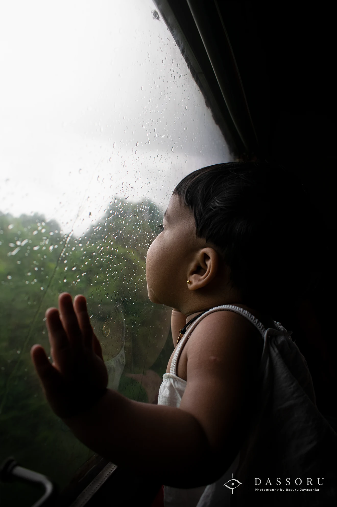

PEOPLE
Just Curious
Seeing the world for the first time.
The journey from Jamnagar to Kochi took around three days by train.
Three days of changing landscapes, unfamiliar places, stations, people and endless scenery passing outside the window.
And then I noticed this little girl quietly watching the world go by.
She was less than a year old.
She did not know where we were going. She probably did not understand the journey at all.
But she watched everything with complete curiosity.
The moving scenery outside the window seemed almost like a film made especially for her.
I remember looking at her and thinking about how every new thing must look enormous and fascinating when you are seeing the world for the first time.
She was not posing for the photograph. She was simply discovering the world.
And that was enough.
She was my little daughter then, just beginning to know the world.
Today, this photograph reminds me of how quickly those little moments disappear.
- Location
- Train journey from Jamnagar to Kochi, India
- Date
- August 2022
- Photographer
- Basuru Jayasanka
- Category
- People
For commercial use, publication, prints or image licensing, please contact Basuru directly via email or WhatsApp.